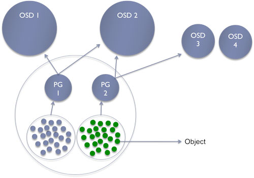

RBD

Free lunch is over (not really)
Consistency
Config consists of:
ceph osd getcrushmap -o FILE.bin crushtool -d FILE.bin -o FILE.txt EDIT FILE.txt crushtool -c FILE.txt -o FILE_new.bin ceph osd setcrushmap -i FILE_new.bin
rule RULENAME {
ruleset <ruleset>
type [ replicated | erasure ]
min_size <min-size>
max_size <max-size>
step take <bucket-type>
step [choose|chooseleaf] [firstn|indep] <N> <bucket-type>
step emit
}

ceph osd map test my-object ceph pg 4.0 query
$ rados put -p testpool logo.png logo.png $ ceph osd map testpool logo.png
/